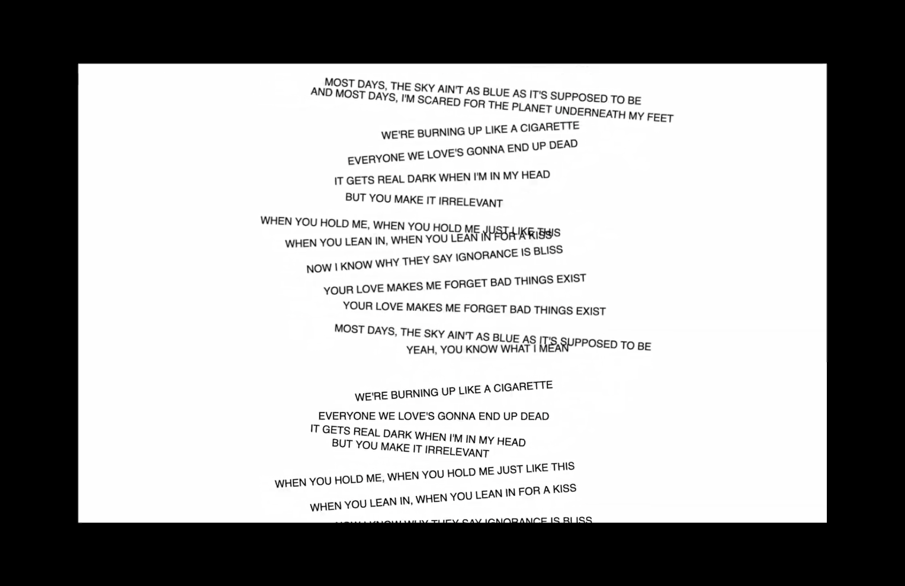
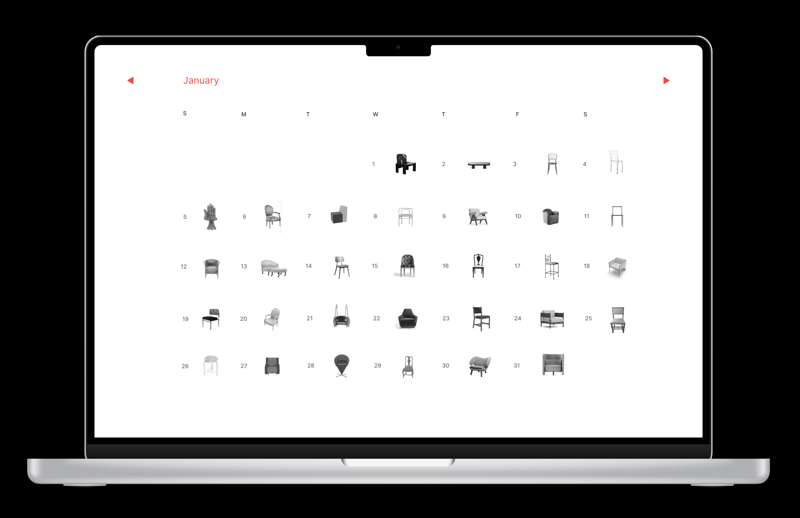

Click to visit the site
I Blame the World
This responsive website, inspired by Sasha Sloan's I Blame the World, explores how typography and design thoughtfully reflect the complexities of blaming the world instead of confronting it.
사샤 슬론(Sasha Sloan)의 'I Blame the World'에서 영감을 받은 이 반응형 웹은 타이포그래피와 디자인을 통해 세상을 탓하는 대신 직면하는 과정을 표현합니다.

Click to visit the site
Chairoscope
This calendar app pairs birthdays with chair designs tailored to users' personalities, creating a personalized experience that seamlessly combines functionality with aesthetic appeal.
이 캘린더 웹사이트는 사용자의 생일에 맞춰 의자 디자인과 성격 설명을 연결해, 기능성과 미적 감각이 결합된 개인화된 경험을 제공합니다.